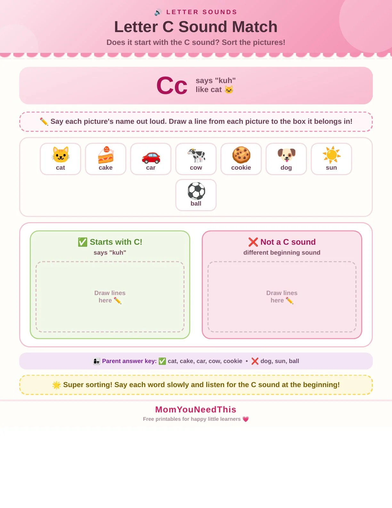

Letter C Sound Match Match The Letter C To Its Beginning Sound Pictures
Help your little learner connect the letter C with the sound it makes. This playful matching printable builds phonemic awareness — a key pre-reading skill.
Quick Answer
Draw the line only if it coughs: preschoolers connect the letter C to every picture whose name opens with the hard /k/, as in cat, car and cake — and learn to leave the others unconnected, including any hissing soft-c words. Matching a written letter to a heard sound is the core move of phonics. Print at home with no signup needed.
At a Glance
- Ages: Preschoolers
- Activity: Matching letter C to the pictures that start with /k/
- Skills: Beginning sounds and matching
- Format: Printable worksheet (PDF)
- Cost: Free, no signup
🐱 Cat
🚗 Car
🍰 Cake

🔊 Listen, Match & Draw A Line
Say the letter C and its sound together. Then look at each picture, say its name, and draw a line from the letter to the pictures that begin with the C sound. Pictures that begin with other sounds get no line — leaving them out is half the game.
⬇️ Download Free Printable 🖨️ Print🎁 Free printable for toddlers & preschoolers
🗣️ Stretch The First Sound
Work in passes. First pass: say each picture's name and stretch its opening — c-c-cat is the model. Second pass: draw lines only to the pictures that coughed. Two passes keep the listening and the pencil work separate, which makes both better.
🎉 Celebrate Every Match
Save the biggest cheer for a correct rejection: the picture your child almost connected, then caught hissing or humming instead of coughing. Withholding the line is the same skill as matching, worn inside out, and it deserves equal applause.
🎨 Keep Exploring Free Letter Activities
More alphabet learning activities are added regularly for toddlers and preschoolers.
🎁 View All Free Resources🔊 Matching The C Sound
A line on this page is a claim: “this word starts like cat.” Your child tests each picture against the cough — that little /k/ from the back of the throat — and only the true coughs get connected to the letter C. Pictures that hiss, hum or pop instead stay unconnected, and leaving them out takes as much listening as matching the right ones.
The reference trick works beautifully here: cat is a word most children can say and hear clearly. “Does it start like cat?” converts every new picture into a comparison a preschooler can actually perform, instead of a sound they have to recall from nowhere.
C's impostor is its own second sound: city and circle start with the letter c but hiss like s. A child who rejects a hiss-word on this page has understood something real about how letters work — that is worth more celebration than any correct line.
🖨️ How to Use This Printable
Get started in minutes — everything here is free and made for busy parents.
- Download the printable. Tap the download button to save the free Free Letter C Sound Match file to your device.
- Print it out. Use any home printer and regular paper — cardstock works great for pages little hands will use again and again. The print button opens the full-size page in a new tab if you prefer to print from there.
- Learn together. Sit with your child and say every picture's name out loud before any lines are drawn. Stretch the /k/ together and let your child make the call. Short sessions work best.
- Explore more. Check the free printables linked below for your next activity.
❓ Free Letter C Sound Match FAQs
Is this Free Letter C Sound Match printable free?
Yes — every printable on MomYouNeedThis is 100% free to download and print. No signup, no payment, just tap the download button and print the C match as often as your child wants another round.
How do I use this letter c printable?
Print the page and match together: say the letter C's sound, name each picture slowly, and draw a line only to the pictures that begin with /k/. Short, playful sessions work better than long lessons for little learners.
What literacy skills does this practice?
Letter-sound correspondence — the written C stands for the cough /k/ — plus beginning sounds and listening discrimination. The sharpest judgements on this page involve c's own soft sound in words like city: same letter, wrong sound for this game. Rejecting those teaches that letters are sound rules, not just shapes.
🔗 More Free Printables You’ll Love
Pair this printable with more free learning activities from the MomYouNeedThis library.
- 🔊 Free Letter D Sound MatchFree printable letter d sound match for little learners.
- 🖼️ Free Letter C Picture SortFree printable letter c picture sort for little learners.
- 🔊 Free Uppercase Letter C Sound PracticeFree printable uppercase letter c sound practice for little learners.
- 🎨 Free Letter C Sound ColoringFree printable letter c sound coloring for little learners.